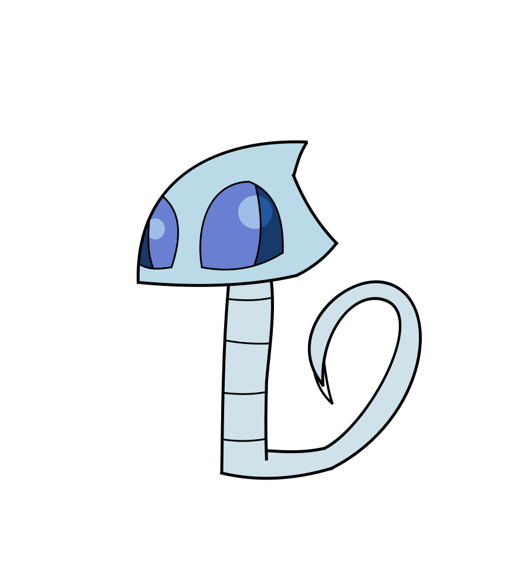
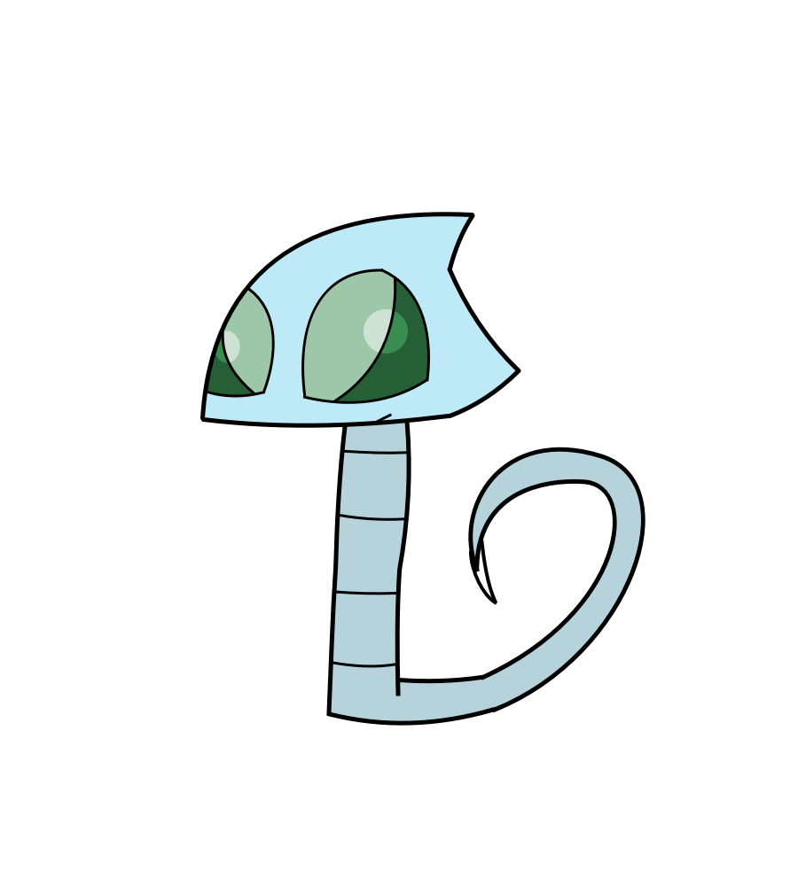
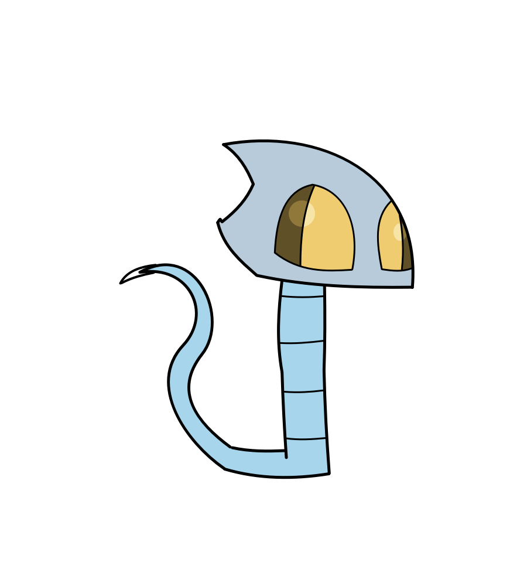
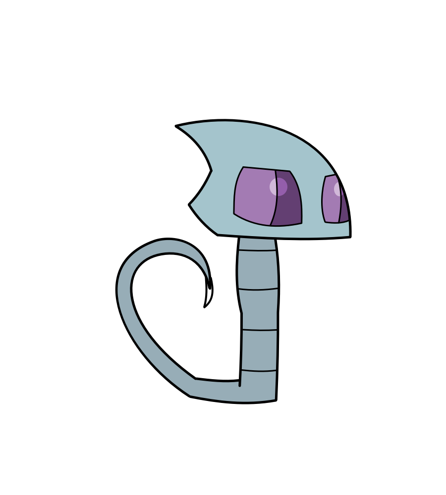
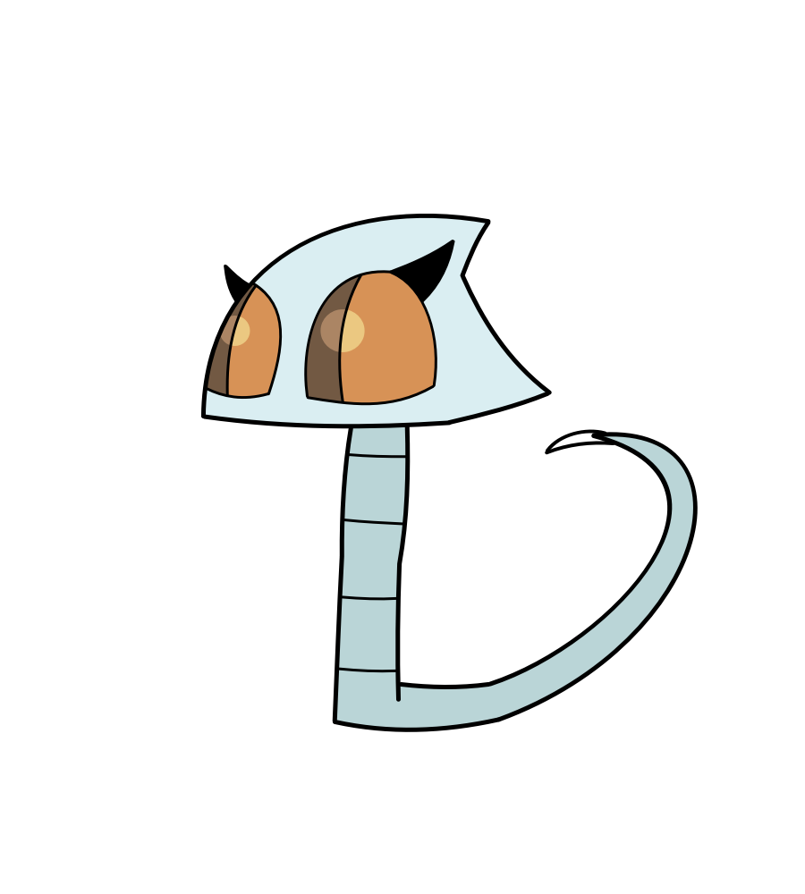
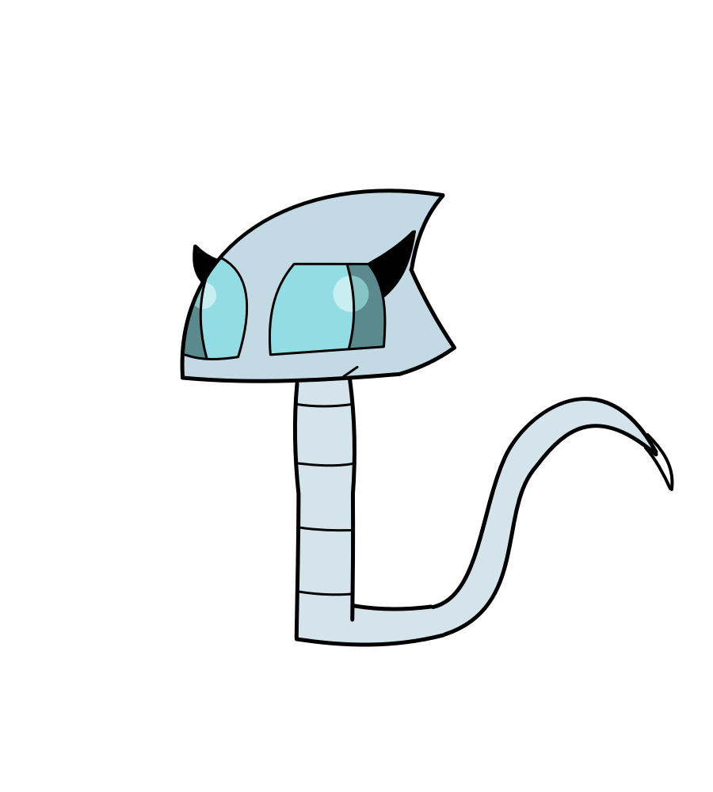
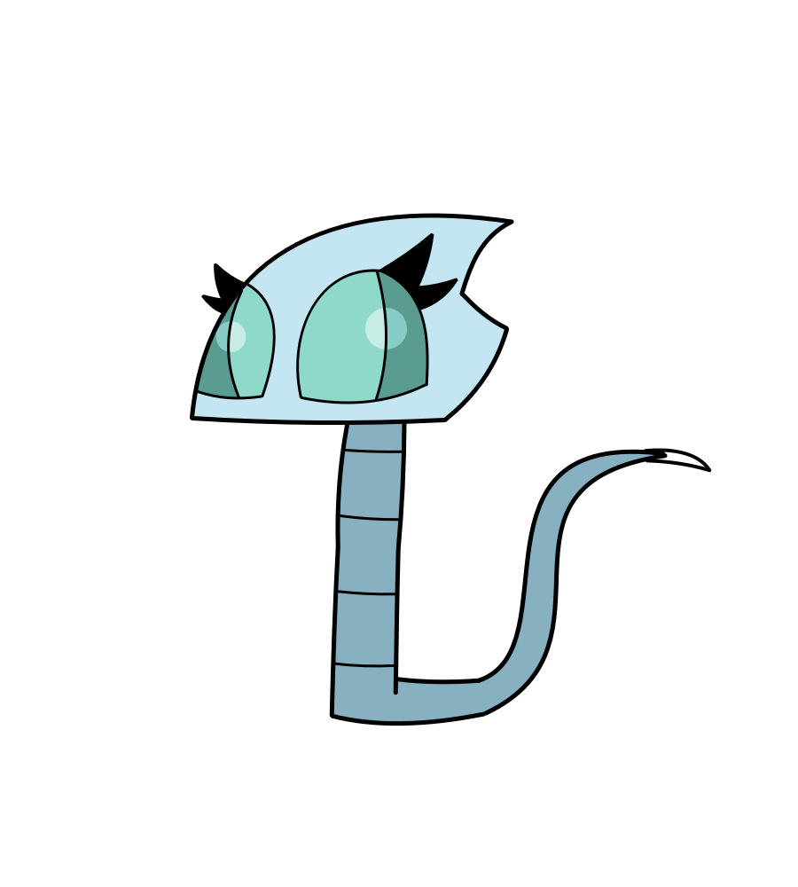

Track is "Momar" by Mark Sumner used in Marathon Resurrection.
This is a 2D Xbox Series S|X game featuring an old top-down style that I wanted to do for a long time. It is set in space where a scientifically advanced specie called Gritters are in war with a race called Kaoms who enslaved the Gritter's allies in the past.
Currently the game is in early development but should be easy to work with. The player is controlling a Major Gritter Warrior called Goulger who's sent to a Kaom colonized planet to help conquer it to cripple their advantages.
Goulger

Warrior 1

Warrior 2

Warrior 3

Warrior 4

Warrior 5

Warrior 6
